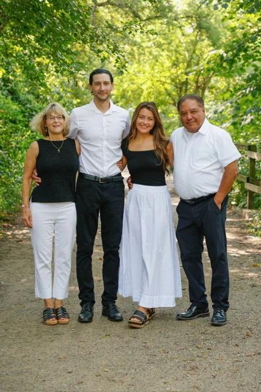
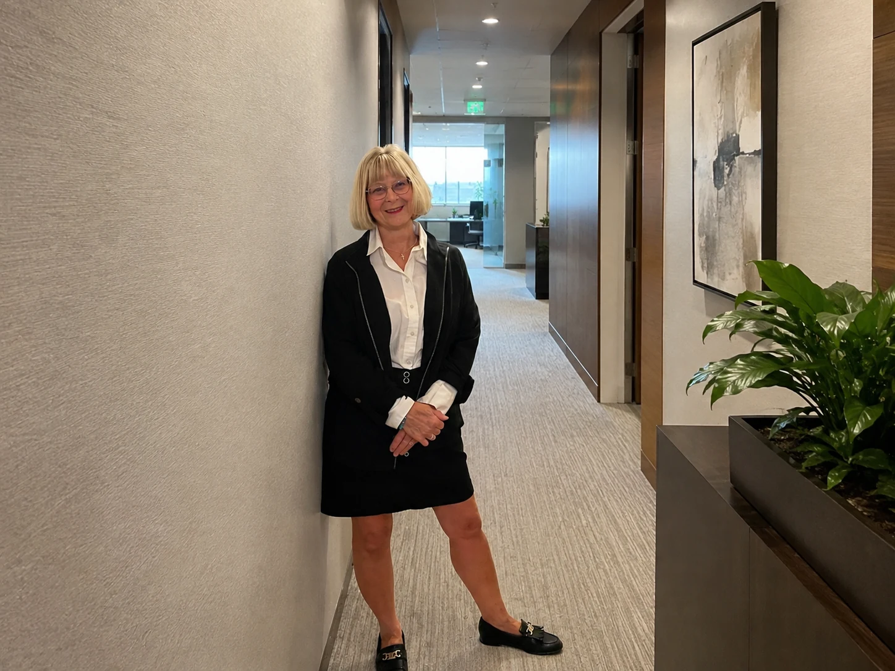

01
Academic excellence
Reading, mathematics, writing, science, civics, and meaningful paths for every learner.
Four decades of leadership under pressure. A lifetime of service. One clear purpose: strong schools that put students first and treat parents as partners.


Mary's career has demanded compassion, accountability, collaboration, and sound decisions when the stakes are real. She will bring that same discipline to the Troy School Board.
Hear directly from Mary about the steady, student-first leadership she will bring to the Troy School Board.
Not slogans. A practical standard for every decision made at the board table.
Reading, mathematics, writing, science, civics, and meaningful paths for every learner.
Secure buildings, consistent discipline, emergency readiness, and calm communication.
Plain-language decisions, curriculum transparency, early notice, and genuine public input.
Professional respect, classroom support, less bureaucracy, and time to teach.
Independent oversight, transparent contracts, responsible reserves, and clear results.
Mary has spent her career caring for people, leading teams, teaching professionals, and preparing for the moments nobody can afford to mishandle.
Began a healthcare career defined by responsibility, composure, and service.
Decades with Beaumont / Corewell Health in nursing management and hospital supervision.
Taught future nurses at Baker College and Oakland University.
Basic Life Support instruction, FEMA training, and hospital emergency-management responsibility.
Throughout my career, I have cared for people, taught future professionals, led teams, managed difficult situations, and helped organizations make responsible decisions. I am running because our students deserve leadership that puts children first.Mary Gunn · Candidate for Troy School Board
Troy's schools are shaped by the people willing to step forward. Pick the way you want to help. We will turn it into a ready-to-send message to Mary's campaign.
Ask the hard question. Share what your family needs. Or choose a concrete way to help.
No email app required. The campaign can reply directly to you.